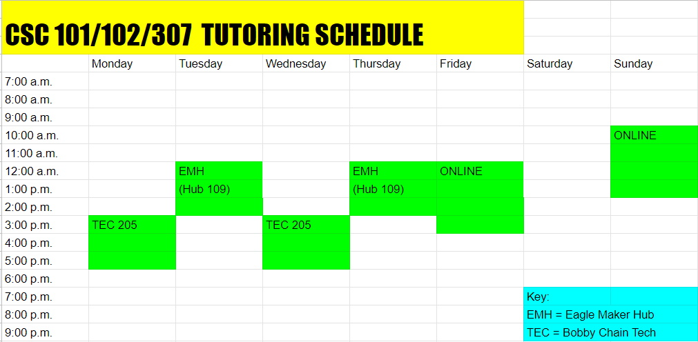

had to step out for a moment. Will return to EMH Hub 105 by 12:20-12:30 pm
USM CSC 101/102/307 Tutoring
- How to schedule: Tutoring hours are available by walk in during tutoring hours or by appointment.
(Appointments carry priority.) Email: w10001068@usm.edu Tutor: Enoc Lopez

1. Email me your Student ID number, study topics, and any files you may be working with at least a day ahead of time and ask for which available day on my schedule is best for you.
2. Make sure to be there as discussed. That's it!